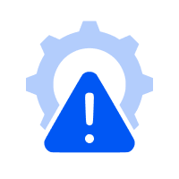

01
Relevant Engagement
Become discoverable within an ecosystem designed around business requirements, professional expertise and stage-specific needs.

Strategic partners
Become part of a professional ecosystem designed to connect specialist capabilities with businesses navigating investment readiness, growth and transaction requirements.

Beyond capital
Preparing a business for investment involves more than connecting with investors. Financial clarity, legal preparedness, compliance, operational strength and strategic planning all play an important role.
Specialist expertise can help businesses address these requirements at different stages of their journey.
WeFundCo is designed to bring relevant professional capabilities into this process, supporting a more structured approach to business readiness and transaction preparation.
Why partner with WeFundCo
Become discoverable within an ecosystem designed around business requirements, professional expertise and stage-specific needs.

Present your capabilities, experience and areas of specialisation to businesses and ecosystem participants exploring relevant services.

Position your expertise across business readiness, diligence, compliance, growth and transaction-related requirements.

Be part of an environment designed to support relevant professional engagement and collaboration as the platform develops.
Our partner ecosystem
WeFundCo is building an ecosystem of independent specialists across key business and transaction-related disciplines.
Corporate legal advisory, intellectual property, contracts, regulatory compliance and company secretarial services.
Accounting, taxation, valuation, virtual CFO services and financial structuring.
Business consulting, market research, go-to-market strategy and growth advisory.
Software development, AI solutions, enterprise technology and cybersecurity.
Brand strategy, digital marketing, communications and public relations.
Recruitment, HR consulting, payroll compliance and leadership hiring.

07 / 10Supply chain, procurement, contract manufacturing and quality assurance.

08 / 10Sustainability advisory, climate technology and environmental compliance.
Industry experts, mentors, training providers, incubators and accelerators.
Financial, legal and technical diligence specialists and background verification providers.
The partner journey
Share your professional details, services and areas of expertise.
Your information is reviewed against applicable participation and verification criteria.
Following approval and onboarding, present your professional capabilities within the WeFundCo ecosystem.
As the platform develops, potential engagement opportunities may arise based on business requirements, specialist expertise and mutual interest.
Built on professional relevance
WeFundCo is designed around relevance, preparedness and informed engagement.
Our approach is to support connections between businesses and independent specialists where professional expertise may be valuable, rather than prioritising the volume of introductions.
Each engagement remains subject to mutual agreement, independent assessment and applicable professional terms.
Become a strategic partner
Bring your expertise into an ecosystem being built around business readiness, informed evaluation and professional collaboration.
WeFundCo is currently in its pre-launch stage. Partner participation is subject to review and applicable onboarding requirements.